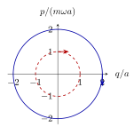
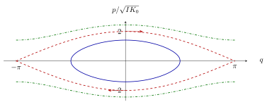
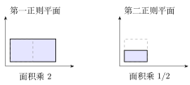
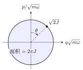
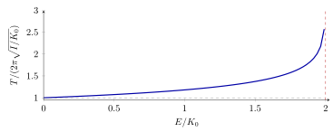
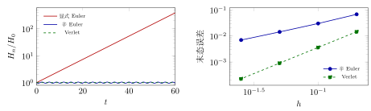

第三至五章用拉格朗日量建立运动方程，并处理振动与刚体。现在把速度换成共轭动量：在速度Hessian非退化的区域，同一动力学可写成相空间中的一阶方程。这样做不增加初始数据，而是使守恒量、变量变换和流的几何结构更清楚。
本章主线是：勒让德变换与边界条件 \(\to\) 相空间流 \(\to\) 泊松括号与对称性 \(\to\) 正则变换 \(\to\) 哈密顿–雅可比完全积分 \(\to\) 作用角与数值结构。
学习时始终核对三个条件：变换是否局部可逆？使用的是正则动量还是机械动量？结论是局部坐标中的关系，还是覆盖完整周期的全局描述？含耗散、奇异约束或非完整系统不能未经重建就套用本章普通正则方程。
6.1勒让德变换与正则方程
6.1.1先作变量变换，再使用运动方程
设 \(L(q,\dot q,t)\) 光滑，\(q=(q_1,\ldots,q_s)\) 是独立局部坐标。定义 \[p_a=L_{\dot q_a},\qquad W_{ab}=L_{\dot q_a\dot q_b}. \tag{6.1}\] 在 \(\det W\ne0\) 的一个点附近，隐函数定理保证可局部反解 \(\dot q=v(q,p,t)\)。定义 \[H(q,p,t)=\sum_a p_av_a(q,p,t)-L(q,v(q,p,t),t). \tag{6.2}\] 这个勒让德变换中的速度已被消去，不是额外的独立变量。不使用运动方程，先微分： \[\begin{aligned} \mathrm{d}H&=\sum_a(v_a\mathrm{d}p_a+p_a\mathrm{d}v_a) -\sum_a(L_{q_a}\mathrm{d}q_a+L_{\dot q_a}\mathrm{d}v_a)-L_t\mathrm{d}t\\ &=\sum_a(v_a\mathrm{d}p_a-L_{q_a}\mathrm{d}q_a)-L_t\mathrm{d}t. \end{aligned}\] 故恒等地 \(H_{p_a}=v_a,H_{q_a}=-L_{q_a},H_t=-L_t\)。最后才在真实路径上用 \(\dot p_a=L_{q_a}\)，得到 \[\boxed{\dot q_a=H_{p_a},\qquad\dot p_a=-H_{q_a}.} \tag{6.3}\] 这里 \(H_t\) 保持 \(q,p\) 不变，\(L_t\) 保持 \(q,\dot q\) 不变，再用速度反解比较。反向代入也恢复原拉格朗日方程；两种描述都需要 \(2s\) 项初始数据。
若 \(L=\dot q^{\mathsf T}M(q,t)\dot q/2+a(q,t)^{\mathsf T}\dot q-V(q,t)\)，\(M\) 可逆，则 \[p=M\dot q+a,\qquad H=\tfrac12(p-a)^{\mathsf T}M^{-1}(p-a)+V.\] 速度一次项不会使变换失效；它使正则动量偏离通常的机械动量。第五章刚体惯量正定有利于反解，但欧拉角在极轴奇异时仍须换坐标图。
例 1.1 (非退化不等于全局单值). 令 \(u=\dot q/v_*\)，取正尺度 \(E_*,v_*\)， \[L=E_*(u^4/4-u^2/2)-V(q),\qquad p=\frac{E_*}{v_*}(u^3-u).\] \(p=0\) 对应 \(u=0,\pm1\)，三处Hessian分别为 \(-E_*/v_*^2,2E_*/v_*^2,2E_*/v_*^2\)，均非零，但同一动量对应不同速度分支。各分支局部可用 \[H=E_*(3u^4/4-u^2/2)+V(q),\] 并不能据局部非退化就任意选成一个全局函数。严格凸性可保证动量映射在适当凸域中的单射性，覆盖整个动量域还需全局条件。普通正则理论不要求Hessian正定，但稳定性和全局性是另外的问题。
若 \(L\) 含未消去的乘子，或某个速度根本不出现，Hessian可奇异，例如 \(L=(\dot x-y)^2/2\) 有 \(p_y=0\)。不能照常反解所有速度；约束哈密顿理论需另外建立，本章不展开。
6.1.2能量、循环坐标与含时表示
沿正则运动 \[\frac{\mathrm{d}H}{\mathrm{d}t}=\sum_a(H_{q_a}\dot q_a+H_{p_a}\dot p_a)+H_t=H_t. \tag{6.4}\] 所以 \(H_t=0\) 给出 \(H\) 守恒。它是否等于实验室系机械能，仍需建模条件：定常自然系统的 \(L=T-V\)、\(T\) 为齐二次型时，\(H=T+V\)。电磁速度一次项也可抵消而给 \(H=T+e\phi\)；不能简单断言“凡含速度势，\(H\) 必不等于能量”。含时坐标或全导数改变则可能改变这种识别。
若 \(H\) 不含 \(q_a\)，则 \(\dot p_a=0\)，但守恒的是所选正则动量。若 \(L'=L+\mathrm{d}G(q,t)/\mathrm{d}t\)，则 \[p'=p+G_q,\qquad H'(q,p',t)=H(q,p'-G_q,t)-G_t.\] 显含时间的表示仍可能描述原来守恒的物理量，不能只看 \(H'\) 是否显含时间判断整个系统有无能量守恒。
例 1.2 (谐振子：椭圆与时间方向). 对 \(L=m\dot q^2/2-m\omega^2q^2/2\)，有 \[p=m\dot q,\quad H=\frac{p^2}{2m}+\frac12m\omega^2q^2, \quad \dot q=p/m,\quad\dot p=-m\omega^2q.\] 消元得 \(\ddot q+\omega^2q=0\)。令固定长度尺度为 \(a\)，用 \(Q=q/a,P=p/(m\omega a)\)，等能线为 \(Q^2+P^2=2E/(m\omega^2a^2)\)，在 \((Q,P)\) 图上沿顺时针演化；右端点速度朝下，最高点速度向右。这两个无量纲量用于画图，它们的括号为\(1/(m\omega a^2)\)；作无量纲正则化时需连同作用量、时间尺度一致处理。

6.1.3相空间作用量与端点条件
取固定端点时间，定义 \[\mathcal A[q,p]=\int_{t_1}^{t_2}\left[\sum_ap_a\dot q_a-H(q,p,t)\right]\mathrm{d}t. \tag{6.5}\] \(q,p\) 是独立的试探路径。对 \(p\delta\dot q\) 分部积分，得到 \[\begin{aligned} \delta\mathcal A={}&\left[\sum_ap_a\delta q_a\right]_{t_1}^{t_2}\\ &+\int\sum_a[(\dot q_a-H_{p_a})\delta p_a -(\dot p_a+H_{q_a})\delta q_a]\mathrm{d}t. \end{aligned}\] 固定两端 \(q\)、不固定动量端点，边界项消失，任意内部变分就给两组正则方程。沿驻值路径有 \(p=L_{\dot q}\)，作用量恢复第三章的 \(\int L\mathrm{d}t\)；任意试探相路径却不需预先满足该关系。
若固定动量端点，应改用 \(\mathcal A-[\sum p_aq_a]_{t_1}^{t_2}\)，边界变分成为 \(-[\sum q_a\delta p_a]\)。任意再加固定两端全部动量的求解条件，通常会使边值问题过度约束；固定两个构型端点也不保证任意时间间隔都存在唯一连接轨道。
6.2从模型辨认正则动量
6.2.1中心势中的球坐标
例 1.3 (中心势的哈密顿方程与径向核验). 非相对论质点质量 \(m\)，势能 \(V(r)=-\kappa/r\)，\(\kappa>0\)。只把它当作经典中心势模型，不包含辐射反作用、原子稳定性或量子跃迁。球坐标正则域取 \(r>0,\sin\theta\ne0\)，动能给 \[p_r=m\dot r,\quad p_\theta=mr^2\dot\theta,\quad p_\varphi=mr^2\sin^2\theta\dot\varphi.\] 逐项勒让德变换得到 \[H=\frac{p_r^2}{2m}+\frac{p_\theta^2}{2mr^2} +\frac{p_\varphi^2}{2mr^2\sin^2\theta}-\frac\kappa r.\] 于是 \[\begin{aligned} \dot r&=p_r/m,&\dot p_r&=\frac{p_\theta^2}{mr^3}+\frac{p_\varphi^2}{mr^3\sin^2\theta}-\frac\kappa{r^2},\\ \dot\theta&=p_\theta/(mr^2),&\dot p_\theta&=\frac{p_\varphi^2\cos\theta}{mr^2\sin^3\theta},\\ \dot\varphi&=p_\varphi/(mr^2\sin^2\theta),&\dot p_\varphi&=0. \end{aligned}\] \(p_\varphi\) 是角动量的 \(z\) 分量。若初态 \(\theta=\pi/2,p_\theta=0\)，方程保持这两个条件，化为 \[\dot p_r=\frac{\ell^2}{mr^3}-\frac\kappa{r^2},\quad \ell=p_\varphi.\] 与第一章 \(m(\ddot r-r\dot\varphi^2)=-\kappa/r^2\) 一致。坐标轴极点处的分母奇异是球坐标图问题，不代表质点动力学必然奇异；\(r=0\) 的库仑势奇异则是另一回事。
6.2.2带电粒子与规范变换
带电量记为 \(e\)（可正可负），与广义坐标 \(q\) 区分。外电磁势给定，质量 \(m\) 恒定且不计辐射反作用： \[L=\tfrac12m\mathbf{v}^2+e\mathbf{A}(\mathbf{r},t)\cdot\mathbf{v}-e\phi(\mathbf{r},t),\qquad \mathbf{p}=m\mathbf{v}+e\mathbf{A}.\] 故 \[H(\mathbf{r},\mathbf{p},t)=\frac{[\mathbf{p}-e\mathbf{A}(\mathbf{r},t)]^2}{2m}+e\phi(\mathbf{r},t). \tag{6.6}\] 定义机械动量 \(\mathbf\pi=\mathbf{p}-e\mathbf{A}\)，正则方程是 \[\dot x_i=\pi_i/m=v_i,\qquad \dot p_i=e\sum_jv_j\partial_i A_j-e\partial_i\phi.\] 再用 \(\dot\pi_i=\dot p_i-e\partial_tA_i-e\sum_jv_j\partial_jA_i\)，得到 \[\dot\pi_i=e[-\partial_i\phi-\partial_tA_i] +e\sum_jv_j(\partial_iA_j-\partial_jA_i) =e[\mathbf{E}+\mathbf{v}\times\mathbf{B}]_i.\] 这与第三章洛伦兹力推导吻合，但 \(\dot p_i\) 本身一般不等于洛伦兹力。
例 1.4 (匀强磁场：机械动量不构成正则对). 取 \(\mathbf{B}=B\hat z,\phi=0,\mathbf{A}=(0,Bx,0)\)。则 \[H=\frac{p_x^2+(p_y-eBx)^2+p_z^2}{2m},\quad p_y,p_z\text{ 守恒}.\] \(x\) 方程给 \(\dot p_x=eB(p_y-eBx)/m=eBv_y\)，\(\dot p_y=0\) 却不意味着 \(mv_y\) 守恒，因为 \(\pi_y=p_y-eBx\)。代入即得平面回旋方程 \(m\dot v_x=eBv_y,m\dot v_y=-eBv_x\)，机械动能守恒。后文将算出 \(\{\pi_x,\pi_y\}=eB\)，所以不能把 \((x,y,\pi_x,\pi_y)\) 当成普通正则变量而仍用原括号公式。
规范变换 \(\mathbf{A}'=\mathbf{A}+\nabla\chi,\phi'=\phi-\partial_t\chi\) 使 \[\mathbf{p}'=\mathbf{p}+e\nabla\chi,\qquad H'(\mathbf{r},\mathbf{p}',t)=H(\mathbf{r},\mathbf{p}'-e\nabla\chi,t)-e\partial_t\chi.\] 它是一种含时正则表示变化，后文的第二类生成函数可取 \(F_2(\mathbf{r},\mathbf{p}',t)=\mathbf{r}\cdot\mathbf{p}'-e\chi\)。相同轨道、相同机械动量并不要求不同规范下的正则动量和哈密顿函数数值相同。
6.2.3罗斯约化的符号与循环条件
第五章约化重陀螺使用 \(\mathcal R=L-p_\phi\dot\phi-p_\psi\dot\psi\)。这里保持同一拉格朗日型罗斯函数约定。设坐标分成 \(x_i,y_\alpha\)，对选中的速度块有可逆Hessian，可局部由 \(\mu_\alpha=L_{\dot y_\alpha}\) 消去 \(\dot y\)，定义 \[\mathcal R(x,y,\dot x,\mu,t)=L-\sum_\alpha\mu_\alpha\dot y_\alpha. \tag{6.7}\] 把动量关系代入微分，速度 \(\mathrm{d}\dot y\) 项相消，得到 \[\mathcal R_{\dot x_i}=L_{\dot x_i},\quad \mathcal R_{x_i}=L_{x_i},\quad \mathcal R_{y_\alpha}=L_{y_\alpha},\quad \mathcal R_{\mu_\alpha}=-\dot y_\alpha.\] 真实路径因而满足 \[\frac{\mathrm{d}}{\mathrm{d}t}\mathcal R_{\dot x_i}-\mathcal R_{x_i}=0,\quad \dot\mu_\alpha=\mathcal R_{y_\alpha},\quad \dot y_\alpha=-\mathcal R_{\mu_\alpha}.\] 若 \(y\) 循环，\(\mu\) 才可固定为常数，剩下 \(x\) 的约化拉格朗日问题。另一些文献取哈密顿型相反号 \(R_H=\sum\mu\dot y-L=-\mathcal R\)，其混合正则方程符号随之改变；不能把两种约定无说明地混用。完整Hessian可逆也不自动保证任意选中的子块可逆。
例 1.5 (中心力约化为什么要加离心有效势？). 平面中心势 \(L=m(\dot r^2+r^2\dot\varphi^2)/2-V(r)\)，循环动量 \(\ell=mr^2\dot\varphi\)。先取 \(L-\ell\dot\varphi\) 再代入，得 \[\mathcal R=\frac m2\dot r^2-\left[V(r)+\frac{\ell^2}{2mr^2}\right].\] 所以 \(m\ddot r=-V'(r)+\ell^2/(mr^3)\)。若只代回 \(L\)，会得到离心项的错误符号，因为改变的是固定动量的变分问题。用 \(\dot\varphi=-\mathcal R_\ell=\ell/(mr^2)\) 可重构轨道方位。
6.3相空间流与刘维尔定理
6.3.1完整状态与轨道唯一性
在正则局部图中，\(z=(q,p)\) 是 \(2s\) 维相点。记 \[\Omega=\begin{pmatrix}0&I\\-I&0\end{pmatrix},\qquad \dot z=\Omega\nabla_zH.\] 满足局部唯一性条件时，同一时刻的一个相点给唯一的未来。自治系统的不同相轨道在正则点不能相交；含时系统若把时间投影掉，两条图上曲线可以相交，不能据投影否定唯一性。位形曲线在同一位置交叉更不奇怪，因为动量可以不同。
例 1.6 (单摆：闭合摆动、分离曲线与持续转动). 取角度 \(q\) 从竖直向下量起，\(I=ml^2,K_0=mgl\)， \[H=\frac{p^2}{2I}+K_0(1-\cos q),\quad \dot q=p/I,\quad \dot p=-K_0\sin q.\] 能量给 \(p=\pm\sqrt{2I[E-K_0(1-\cos q)]}\)。\(0<E<2K_0\) 为有两转折点的摆动；\(E>2K_0\) 动量不变号，是持续转动；\(E=2K_0\) 为分离曲线。\(q\) 按 \(2\pi\) 识别，完整相空间是圆柱，转动轨道在展开平面上不闭合，却在圆柱上闭合。顶点 \((\pi,0)\) 为鞍点，线性式 \(\ddot\eta-(K_0/I)\eta=0\) 含增长与衰减方向。

6.3.2散度、流映射与密度
设 \(H\) 二阶偏导连续，\(\mathcal D_t\) 是随流移动的相区域。速度场散度为 \[\nabla_z\cdot\dot z=\sum_a(\partial_{q_a}H_{p_a}-\partial_{p_a}H_{q_a})=0.\] 由输运定理， \[\frac{\mathrm{d}}{\mathrm{d}t}\int_{\mathcal D_t}\mathrm{d}^sq\,\mathrm{d}^sp=0. \tag{6.8}\] 等价地，流映射 \(z(t)=\Phi_{t,t_0}(z_0)\) 的雅可比行列式满足 \[\frac{\mathrm{d}}{\mathrm{d}t}\det D\Phi=(\nabla_z\cdot\dot z)\det D\Phi=0, \quad \det D\Phi_{t_0,t_0}=1.\] 这是刘维尔定理；不要求自治，体积保持也不要求形状保持。
对随流输运的概率密度 \(\rho(q,p,t)\)，连续性方程为 \[\partial_t\rho+\nabla_z\cdot(\rho\dot z)=0, \quad \partial_t\rho+\dot z\cdot\nabla_z\rho=0.\] 因此精细密度沿轨道不变，即使分布显含时间也如此。对自治 \(H\)，适当的 \(\rho=f(H)\) 是静态分布，但体积保持本身既不保证遍历性，也不推出能量面上某个特定均匀概率；微正则平衡仍需统计假设。相体积元素是正则坐标的 \(\mathrm{d}q\mathrm{d}p\)，在一般非正则变量中不能丢掉测度雅可比。
6.4泊松括号、守恒量与生成元
6.4.1定义及恒等式的来由
对相空间函数定义 \[\{f,g\}=\sum_a(f_{q_a}g_{p_a}-f_{p_a}g_{q_a}) =(\nabla f)^{\mathsf T}\Omega\nabla g. \tag{6.9}\] 用正则方程代入总导数，得到 \[\dot f=\{f,H\}+\partial_tf. \tag{6.10}\] 所以基本括号为 \(\{q_a,q_b\}=\{p_a,p_b\}=0,\{q_a,p_b\}=\delta_{ab}\)。括号对实常数线性、反对称，且由导数乘积法则有 \[\{f,gh\}=\{f,g\}h+g\{f,h\}.\] 若系数依赖相点，就不能把它随意当常数移出括号。
雅可比恒等式为 \[\{f,\{g,h\}\}+\{g,\{h,f\}\}+\{h,\{f,g\}\}=0. \tag{6.11}\] 它不是额外的运动假设。以 \(z_i\) 记全部正则变量，\(f_i=\partial_if\)，常矩阵 \(\Omega\) 给 \[\{f,\{g,h\}\}=f_i\Omega_{ij}g_{kj}\Omega_{k\ell}h_\ell +f_i\Omega_{ij}g_k\Omega_{k\ell}h_{\ell j}.\] 加上两个循环置换后，含 \(f_{ij}\)、\(g_{ij}\)、\(h_{ij}\) 的项分别因二阶导数对称与 \(\Omega\) 反对称成对抵消。这也说明它依赖当前括号的微分结构，不能只凭反对称性就认定任意双线性运算满足雅可比式。
6.4.2显含时间的运动积分
定义 \(D_Hf=\partial_tf+\{f,H\}\)。\(f\) 守恒的条件是 \(D_Hf=0\)，不要求它不显含时间。利用雅可比式和时间导数乘积规则， \[D_H\{f,g\}=\{D_Hf,g\}+\{f,D_Hg\}.\] 因此两个运动积分的括号仍是运动积分，即泊松定理；该括号可能只是零或已有量，并不保证产生新的独立守恒量。
例 1.7 (角动量代数与空间转动). 取正则Cartesian变量，\(J_x=yp_z-zp_y,J_y=zp_x-xp_z\)。分别求梯度： \[(J_x)_q=(0,p_z,-p_y),\quad(J_x)_p=(0,-z,y),\] \[(J_y)_q=(-p_z,0,p_x),\quad(J_y)_p=(z,0,-x).\] 两次点积相减得 \(\{J_x,J_y\}=xp_y-yp_x=J_z\)，循环置换给 \(\{J_i,J_j\}=\epsilon_{ijk}J_k\)。这是正则轨道角动量的代数；存在磁矢势时，机械轨道角动量与对称性生成元的识别需另查规范和边界项。
例 1.8 (机械动量的磁括号). \(\pi_i=p_i-eA_i(q,t)\) 满足 \[\{q_i,\pi_j\}=\delta_{ij},\qquad \{\pi_i,\pi_j\}=e(\partial_iA_j-\partial_jA_i)=e\epsilon_{ijk}B_k.\] 计算中 \(\{p_i,A_j\}=-\partial_iA_j\)，\(\{A_i,p_j\}=\partial_jA_i\)，正负号不可丢。故虽有位置–机械动量的单位括号，完整基本括号仍不正则；两动量之间的非零括号正记录磁场的影响。
6.4.3守恒量如何生成状态变换
对光滑 \(G(q,p,t)\)，在固定时刻令 \[\delta q_a=\epsilon G_{p_a},\quad\delta p_a=-\epsilon G_{q_a},\quad \delta f=\epsilon\{f,G\}.\] \(G=p_x\) 生成 \(x\) 平移；\(G=J_z=xp_y-yp_x\) 给 \[\delta x=-\epsilon y,\quad\delta y=\epsilon x,\quad \delta p_x=-\epsilon p_y,\quad\delta p_y=\epsilon p_x,\] 即绕 \(+z\) 的主动微转动。\(G\) 的哈密顿向量场本身生成局部正则流；若 \(G\) 自治且 \(\{H,G\}=0\)，该变换还保持 \(H\)，因而给动力学对称性。
例 1.9 (伽利略速度变换与含时守恒量). 一维自由粒子 \(H=p^2/(2m)\)，取 \(G=tp-mx\)。有 \[\partial_tG=p,\quad\{G,H\}=-p,\quad\dot G=0; \qquad\delta x=\epsilon t,\quad\delta p=\epsilon m.\] \(\epsilon\) 的单位是速度。它生成主动增加速度的状态变换；同第三章含边界项的诺特量一致。若取 \(-G\)，变换参数方向同时反转，不能只比较守恒量的正负号。
正则量子化用 \([\hat q_a,\hat p_b]=i\hbar\delta_{ab}\)，角动量也有相应对易代数。这是结构联系，不意味着对任意经典函数都存在保持所有乘积和泊松括号的简单量子映射；高次乘积有算符次序等问题。继续学习需线性算符与量子力学，本章不以替换符号代替量子化的完整构造。
6.5正则变换：保持的结构与局部生成函数
6.5.1辛条件比保持体积更强
令 \(Z=(Q,P)=Z(z,t)\) 是可逆局部变换，\(\mathcal J=\partial Z/\partial z\)。固定时刻的新变量括号矩阵是 \[\{Z_i,Z_j\}=(\mathcal J\Omega\mathcal J^{\mathsf T})_{ij}.\] 正则变换要求基本括号保持，即 \[\mathcal J\Omega\mathcal J^{\mathsf T}=\Omega \quad\Longleftrightarrow\quad \mathcal J^{\mathsf T}\Omega\mathcal J=\Omega. \tag{6.12}\] 可用 \(\Omega^{-1}=-\Omega\) 取逆证明两个形式等价。此条件还使任意 \(f,g\) 的泊松括号经链式法则保持，不仅是某个给定 \(H\) 的一条轨道偶然能写成相似方程。
对不显含时间的正则变换，\(K(Z)=H(z(Z))\)，于是 \[\dot Z=\mathcal J\Omega\nabla_zH =\mathcal J\Omega\mathcal J^{\mathsf T}\nabla_ZK=\Omega\nabla_ZK.\] 显含时间时还须加 \(\partial_tZ\)，并相应改变 \(K\)；单独验证某时刻辛性不允许把这一项删去。
几何上，辛条件保持二形式 \(\sum_a\mathrm{d}q_a\wedge\mathrm{d}p_a\)。将它作\(s\)次外积便得到正则体积（差一个固定符号和阶乘），故正则变换保持定向体积、\(\det\mathcal J=1\)。在一自由度的二维空间，行列式为1也足够；多自由度时仅有体积保持远远不够。
例 1.10 (四维体积保持的反例). 取两自由度变换 \[Q_1=2q_1,\ P_1=p_1,\quad Q_2=q_2,\ P_2=p_2/2.\] 总雅可比行列式为1，但 \(\{Q_1,P_1\}=2,\{Q_2,P_2\}=1/2\)，不是正则变换。相反，\(Q=aq,P=p/a\)、\(a\ne0\) 的一对互逆缩放是正则的。体积守恒不能代替逐对括号检验。

6.5.2从作用量边界项推导四类公式
局部正则变换可由相空间作用量的一形式关系构造： \[\sum_ap_a\mathrm{d}q_a-H\mathrm{d}t =\sum_aP_a\mathrm{d}Q_a-K\mathrm{d}t+\mathrm{d}F_1.\] 把 \(F_1\) 取为 \((q,Q,t)\) 的函数，比较独立微分系数，就有 \(p=(F_1)_q,P=-(F_1)_Q,K=H+(F_1)_t\)。进一步令 \[F_2=F_1+\sum_aP_aQ_a,\quad F_3=F_1-\sum_ap_aq_a,\quad F_4=F_1-\sum_ap_aq_a+\sum_aP_aQ_a,\] 并在各自可反解的图中改用相应自变量，得到 \[\begin{aligned} F_1(q,Q,t):&\quad p=(F_1)_q,\quad P=-(F_1)_Q,\\ F_2(q,P,t):&\quad p=(F_2)_q,\quad Q=(F_2)_P,\\ F_3(p,Q,t):&\quad q=-(F_3)_p,\quad P=-(F_3)_Q,\\ F_4(p,P,t):&\quad q=-(F_4)_p,\quad Q=(F_4)_P. \end{aligned}\tag{6.13}\] 每一类都有 \(K=H+(F_i)_t\)，偏时间导数保持该类列出的自变量固定。用旧变量写出右端后，还需代入反变换，才能成为 \(K(Q,P,t)\)。
这些是局部构造，需相应混合Hessian可逆。例如 \(F_2\) 需要 \(\det(F_{2,qP})\ne0\)，才能由 \(p=F_{2,q}\) 解出 \(P\)。恒等变换有 \(F_2=q\cdot P\)，但不能把依赖的 \(q,Q=q\) 强作独立变量构成常规 \(F_1(q,Q)\) 图。存在正则变换不意味着四类生成函数在所有点或全局都同时可用。
例 1.11 (可逆点变换及其动量). 设 \(Q=f(q)\)，\(Df\) 可逆，取 \(F_2(q,P)=f(q)\cdot P\)。则 \[Q=f(q),\qquad p=(Df)^{\mathsf T}P.\] 这是第三章位形坐标变换的正则提升。对 \(Q=aq\)，\(P=p/a\)，新量纲随坐标尺度变化，\(p\mathrm{d}q=P\mathrm{d}Q\)；若只改 \(q\) 而不相应改 \(p\)，一般不再正则。
例 1.12 (移动坐标：新哈密顿量要包含时间项). 自由粒子改用 \(Q=x-Vt\)，取 \(F_2(x,P,t)=(x-Vt)P\)，故 \[p=P,\quad Q=x-Vt,\quad K=H-VP=\frac{P^2}{2m}-VP.\] 正则方程 \(\dot Q=P/m-V,\dot P=0\) 与坐标定义一致。也可从 \(L'=m(\dot Q+V)^2/2\) 直接勒让德变换复算；\(K\) 不等于原系 \(p^2/(2m)\)。
若还希望新动量是移动系机械动量，另取 \[\widehat F_2=(x-Vt)(\widehat P+mV)+\tfrac12mV^2t.\] 得到 \(p=\widehat P+mV,\widehat Q=x-Vt,\widehat K=\widehat P^2/(2m)\)。两个描述的坐标相同、动量和边界项不同，不能将其中一套的\(P\)与另一套的\(K\)混用。
例 1.13 (规范变换作为含时正则变换). 对电磁例取 \(F_2(\mathbf{r},\mathbf{p}',t)=\mathbf{r}\cdot\mathbf{p}'-e\chi(\mathbf{r},t)\)，则 \[\mathbf{p}=\mathbf{p}'-e\nabla\chi,\quad\mathbf{r}'=\mathbf{r},\quad K=H-e\partial_t\chi.\] 代入旧 \(H\)，正好成为势 \(\mathbf{A}'=\mathbf{A}+\nabla\chi,\phi'=\phi-\chi_t\) 下的同一最小耦合形式。机械动量 \(\mathbf{p}'-e\mathbf{A}'=\mathbf{p}-e\mathbf{A}\) 不变，独立验证了轨道不变；哈密顿量改变不是额外施加了一个电场。
6.6哈密顿–雅可比理论：从完全积分重构运动
6.6.1把运动转成常变量的条件
希望构造第二类生成函数 \(S(q,\alpha,t)\)，使新动量为 \(\alpha\)，新坐标为 \(\beta\)，新哈密顿量为零。由 \(p=S_q\)、\(K=H+S_t\)，得到 \[\boxed{S_t+H(q,S_q,t)=0.} \tag{6.14}\] 这是一阶偏微分方程，称哈密顿–雅可比（HJ）方程，\(S\)称哈密顿主函数，具有作用量量纲。求到一个无参数的 \(S(q,t)\)，只给一族 \(p=S_q\)，通常不足以重建全部初值。所需完全积分含 \(s\) 个参数 \(\alpha_a\)，并在工作图中满足 \[\det S_{q_a\alpha_b}\ne0.\] 于是 \[p_a=S_{q_a},\quad \beta_a=S_{\alpha_a},\quad \dot\alpha_a=\dot\beta_a=0.\] 先由 \(\beta=S_\alpha\) 反解 \(q(t;\alpha,\beta)\)，再求 \(p\)，共给出\(2s\)个轨道常量。可任加一个不影响导数的常数，但它不算新的独立轨道参数。
由真实路径上的作用量随终点变化，可得端点形式 \(\mathrm{d}S=p\cdot\mathrm{d}q-H\mathrm{d}t\)，所以 \(S_q=p,S_t=-H\)；这里选择了固定初端与一条光滑连接路径分支。多条连接、焦散或转折会使这个端点函数需分支或换图，不能把它不加条件称作全局单值函数。
例 1.14 (自由粒子的完全积分). \(H=p^2/(2m)\)，取 \[S(x,\alpha,t)=\alpha x-\frac{\alpha^2}{2m}t, \quad S_{x\alpha}=1.\] 直接代入HJ式为零；\(p=\alpha,\beta=x-\alpha t/m\)，故 \(x=\beta+\alpha t/m\)。\(\alpha\) 为初动量，\(\beta\) 为初位置；量纲 \([S]=\)能量\(\times\)时间，故 \(S_x\) 确为动量。
例 1.15 (恒力的完全积分与两个初值). 恒力 \(F\) 的势能 \(V=-Fx\)，取 \[S=(\alpha+Ft)x-\frac{\alpha^2t}{2m} -\frac{\alpha Ft^2}{2m}-\frac{F^2t^3}{6m}.\] 有 \(S_x=\alpha+Ft\)，而 \[S_t=Fx-\frac{\alpha^2}{2m}-\frac{\alpha Ft}{m}-\frac{F^2t^2}{2m},\] 与 \(H(x,S_x)=S_x^2/(2m)-Fx\) 相消，且 \(S_{x\alpha}=1\)。因此 \[p=\alpha+Ft,\quad\beta=x-\alpha t/m-Ft^2/(2m), \quad x=\beta+\alpha t/m+Ft^2/(2m).\] 这独立恢复Newton恒加速度轨道；\(F\to0\) 退回自由粒子完全积分。
6.6.2自治分离与转折点分支
自治 \(H\) 可令 \[S=W(q,\alpha)-E(\alpha)t,\qquad H(q,W_q)=E. \tag{6.15}\] \(W\) 称特征函数。求解它仍可能与原运动一样困难；HJ提供精确的重组方式，而非保证任意系统都能显式分离。
例 1.16 (谐振子的一支HJ解为何不覆盖整周期？). 设 \(E>0\)，\(A=\sqrt{2E/(m\omega^2)}\)，在 \(|q|<A,p>0\) 的分支上 \[W_q=\sqrt{2mE-m^2\omega^2q^2},\] 其原函数可取 \[W_+(q,E)=\tfrac12q\sqrt{2mE-m^2\omega^2q^2} +\frac E\omega\arcsin(q/A).\] 参数 \(E\) 在该图中使 \(W_{qE}=m/p\ne0\)，因此 \(S=W_+-Et\) 为局部完全积分。求 \(S_E=\beta\) 得 \[\frac1\omega\arcsin(q/A)-t=\beta, \quad q=A\sin[\omega(t+\beta)].\] 但此反正弦主值只覆盖 \(p>0\)、相位在 \((-\pi/2,\pi/2)\) 的区间。转折后必须改取负动量支并匹配相位；转折点 \(p=0\) 时 \(W_{qE}\) 发散，该生成函数图失效，而原相空间运动光滑。不能把局部反正弦时间关系直接当作全局周期计时器。
例 1.17 (中心势分离常数就是角动量). 对前文球坐标中心势，取 \[W=W_r(r)+W_\theta(\theta)+\ell_z\varphi.\] 代入HJ式并乘 \(r^2\)，径向与角向分离，定义常数 \(\ell^2\)： \[(W_\theta')^2+\frac{\ell_z^2}{\sin^2\theta}=\ell^2, \qquad (W_r')^2=2m[E-V(r)]-\ell^2/r^2.\] 所以 \(\ell^2=J^2\)，并要求 \(\ell^2\ge\ell_z^2\)。各项根号的正负分支对应运动方向，容许区要求根号非负；由参数导数重构角度与时间仍是必需步骤。圆轨道或特殊平面选择可使某参数图退化，不能只数形式上的分离常数就保证全局完全积分。
6.7作用角变量、周期与可积性
6.7.1一自由度的面积与频率
对自治一自由度中一族光滑、紧致、无临界点的周期轨道，取真实运动方向的闭合积分 \[J(E)=\frac1{2\pi}\oint p\,\mathrm{d}q. \tag{6.16}\] 对通常有两个简单转折点的自然系统，\(J\) 等于闭合相面积除以 \(2\pi\)。\(q\) 为角坐标的持续转动则要在圆柱的基本周期回路积分，未必是展开平面内的围面积。
在非临界的轨道族上，对 \(H(q,p)=E\) 求导得 \(H_p\partial_Ep=1\)。两支合起来有 \[\frac{\mathrm{d}J}{\mathrm{d}E}=\frac1{2\pi}\oint\frac{\mathrm{d}q}{\dot q} =\frac{T(E)}{2\pi}.\] 简单转折处 \(p=0\) 使端点项为零，\(1/\dot q\) 的奇异性可积；在分离曲线处周期发散则另论。反解 \(E=H(J)\) 后，取局部生成函数 \(W(q,J)\)，定义 \[\theta=W_J,\qquad\dot\theta=H_J=2\pi/T(E),\qquad\dot J=0. \tag{6.17}\] \(\theta\) 的周期为 \(2\pi\)，不是构型角必然相等的另一个名字。若改用不除以 \(2\pi\) 的作用，保持正则性就需将其共轭角同时除以 \(2\pi\)。
例 1.18 (谐振子的全周期相位与局部生成函数). 取 \[q=\sqrt{\frac{2J}{m\omega}}\sin\theta,\qquad p=\sqrt{2m\omega J}\cos\theta,\quad J>0.\] 沿一周积分 \(p\mathrm{d}q\) 得 \(J=E/\omega\)。反变换是 \[J=\frac{p^2+m^2\omega^2q^2}{2m\omega},\qquad \theta=\operatorname{atan2}(m\omega q,p)\pmod{2\pi}.\] 直接求偏导可验证 \(\{\theta,J\}=1\)，因此 \(H=\omega J\) 给 \(\dot\theta=\omega\)。角在任一选定切口图上光滑，绕周后加 \(2\pi\)；原点 \(J=0\) 没有可辨相位，不能纳入同一角坐标图。
在 \(\sin\theta\ne0\) 的适当分支，也可用第一类生成函数 \[F_1(q,\theta)=\tfrac12m\omega q^2\cot\theta, \quad p=(F_1)_q,\quad J=-(F_1)_\theta =\frac{m\omega q^2}{2\sin^2\theta}.\] 由此得 \(K=\omega J\)。\(\sin\theta=0\) 时这类投影图失效，并不表示非零动量的物理状态消失；应换图或直接使用上述正反变换。

6.7.2单摆分离曲线附近：有限作用与无限周期
例 1.19 (周期发散不要求相面积发散). 回到 \(H=p^2/(2I)+K_0(1-\cos q)\)，\(0<E<2K_0\) 时令 \[k=\sqrt{E/(2K_0)}=\sin(q_{\max}/2)<1.\] 由 \(\dot q=p/I\)，四分之一周期为 \(\sqrt{I/(2K_0)}\int_0^{q_{\max}}\mathrm{d}q/\sqrt{E/K_0-1+\cos q}\)。作 \(\sin(q/2)=k\sin u\)，得到 \[T(E)=4\sqrt{I/K_0}\int_0^{\pi/2}\frac{\mathrm{d}u}{\sqrt{1-k^2\sin^2u}}.\] \(k\to0\) 恢复 \(2\pi\sqrt{I/K_0}\)；\(k\to1^-\) 时端点附近被积函数趋 \(1/\cos u\)，积分对数发散，不能继续用固定小振动频率。
分离曲线的正支为 \(p_+(q)=2\sqrt{IK_0}\cos(q/2)\)，\(-\pi\le q\le\pi\)。因此摆动侧的极限作用 \[J_{\rm lib,s}=\frac1{2\pi}\,2\int_{-\pi}^{\pi}p_+(q)\mathrm{d}q =\frac{8\sqrt{IK_0}}\pi\] 仍有限，而 \(\mathrm{d}J/\mathrm{d}E=T/(2\pi)\) 发散。正向转动侧只沿一支绕圆柱一圈，其极限为 \(4\sqrt{IK_0}/\pi\)。两侧采用不同基本回路，不能要求它们的作用值无区别地相等；分离曲线本身不是正则的作用角环面。

6.7.3开普勒作用：不同频率何时相同？
例 1.20 (有界平面库仑势的径向作用). 取 \(V=-\kappa/r,E<0\)，并固定正向角动量 \(\ell>0\)，非圆椭圆的半长轴、偏心率满足 \[a=-\frac\kappa{2E},\qquad \ell^2=m\kappa a(1-e^2),\quad0<e<1.\] 角向作用 \(J_\varphi=\ell\)，径向往复作用为 \[J_r=\frac1\pi\int_{r_-}^{r_+}\sqrt{2m(E+\kappa/r)-\ell^2/r^2}\,\mathrm{d}r.\] 以偏近点角 \(u\) 代入 \(r=a(1-e\cos u),0\le u\le\pi\)，则 \[p_r=\sqrt{m\kappa/a}\frac{e\sin u}{1-e\cos u},\qquad J_r=\frac{\sqrt{m\kappa a}}\pi\int_0^\pi \frac{e^2\sin^2u}{1-e\cos u}\mathrm{d}u.\] 用恒等式 \(e^2\sin^2u/(1-e\cos u)=1+e\cos u-(1-e^2)/(1-e\cos u)\)，再由 \(\tan(u/2)\) 代换得 \(\int_0^\pi\mathrm{d}u/(1-e\cos u)=\pi/\sqrt{1-e^2}\)，故 \[J_r=\sqrt{m\kappa a}-\ell =\kappa\sqrt{\frac{m}{-2E}}-\ell.\] 反解能量为 \[H=-\frac{m\kappa^2}{2(J_r+J_\varphi)^2},\quad \omega_r=\omega_\varphi=\frac{m\kappa^2}{(J_r+J_\varphi)^3} =\sqrt{\frac\kappa{ma^3}}.\] 两角频率相同对应闭合的开普勒椭圆，并与第一章周期关系相容。圆轨道 \(J_r=0\) 是此作用域的边界，零角动量碰撞轨道也不在当前正则环面图内。
6.7.4多自由度可积性与KAM的条件
对自治 \(s\) 自由度系统，刘维尔可积要求包含 \(H\) 在内的\(s\)个函数独立积分 \(F_i\)，且 \(\{F_i,F_j\}=0\)。若共同正则水平集紧致、连通，适当邻域中可用环面上的作用角变量，\(H=H(J)\)，\(\dot\theta_a=\partial_{J_a}H,\dot J=0\)。一般作用是基本回路上的 \(\oint\sum p_a\mathrm{d}q_a/(2\pi)\)，只有在合适分离坐标中才直接变成单项 \(\oint p_a\mathrm{d}q_a\)。
运动可为周期或准周期，取决于频率是否有整数共振关系。非紧致散射、临界能量、分离曲线和坐标覆盖障碍不能被“有\(s\)个常数”一句话排除。可积也不等于一定能在原坐标中初等分离变量。
对 \(H_0(J)+\epsilon H_1(J,\theta)\)，一种常见KAM版本要求足够光滑或解析、摄动小，以及频率非退化，例如 \(\det\partial_J^2H_0\ne0\)；保留频率满足 \(|k\cdot\omega|\ge\gamma|k|^{-\tau}\)，\(k\in\mathbb Z^s\setminus\{0\}\)，参数按定理选取。结论是许多环面保留，不保证所有共振环面，也不直接给出天体寿命。谐振子 \(H_0=\sum\omega_aJ_a\) 在此Hessian条件下退化，需另用合适定理。
自治一自由度鞍点的指数不稳定不等于混沌；线性拍或短时能量误差也不是混沌判据。继续学习需摄动、微分方程及非共振数论条件。
6.8计算与模拟：辛性、能量与误差阶
6.8.1显式Euler与辛Euler的不同结构
取无量纲谐振子 \(H=(q^2+p^2)/2\)，步长 \(h\) 固定。显式Euler为 \[q_{n+1}=q_n+hp_n,\quad p_{n+1}=p_n-hq_n, \quad A_E=\begin{pmatrix}1&h\\-h&1\end{pmatrix}.\] 它满足 \(H_{n+1}=(1+h^2)H_n\)、\(\det A_E=1+h^2\)，任意非零步长都会产生非物理的面积和能量增长。
先踢动量、后漂移位置的辛Euler为 \[p_{n+1}=p_n-hq_n,\quad q_{n+1}=q_n+hp_{n+1},\quad A_S=\begin{pmatrix}1-h^2&h\\-h&1\end{pmatrix}.\] 两步是正则剪切的复合，或直接核验 \(A_S^{\mathsf T}\Omega A_S=\Omega\)。代入还可证明它精确保持二次型 \[\widetilde H_S=\tfrac12(q^2+p^2-hqp).\] 仅当 \(|h|<2\)，这个二次型正定，保证轨道有界；\(|h|=2\) 的重特征值一般有Jordan增长。辛性不自动保证任意步长稳定，更不意味着逐步精确保持原能量。
对一般自治 \(H(q,p)\)，第二类生成函数 \(F_2(q,P)=q\cdot P+hH(q,P)\) 给 \[p=P+hH_q(q,P),\qquad Q=q+hH_p(q,P).\] 这是一般辛Euler的一种形式，通常需隐式解 \(P\)。不能把只适于可分离模型的显式“踢–漂移”直接套用于任意含磁矢势或坐标相关惯性的哈密顿量。
6.8.2Störmer–Verlet：分裂流的对称复合
若 \(H=T(p)+V(q)\)，两部分精确流分别是 \(q\) 漂移、\(p\) 踢动。以半踢–全漂移–半踢复合，得 \[\begin{aligned} p_{n+1/2}&=p_n-\tfrac h2\nabla V(q_n),\\ q_{n+1}&=q_n+h\nabla T(p_{n+1/2}),\\ p_{n+1}&=p_{n+1/2}-\tfrac h2\nabla V(q_{n+1}). \end{aligned} \tag{6.18}\] 每一流辛，复合也辛；把 \(h\) 变为 \(-h\) 并逆序执行恢复原态，因此它还具有时间对称性。对光滑问题，Taylor展开相对精确一步的误差是 \(O(h^3)\)，在合适固定时间区间内全局误差为 \(O(h^2)\)。标准逐状态自适应改变步长一般会破坏原有的辛映射论证，需专门构造。
例如对常见的\(T=p^{\mathsf T}p/(2m)\)，先把分裂步展开： \[q_{n+1}=q_n+hp_n/m-\frac{h^2}{2m}\nabla V(q_n),\] \[p_{n+1}=p_n-h\nabla V(q_n)-\frac{h^2}{2m}V^{\prime\prime}(q_n)p_n+O(h^3).\] 精确方程有\(\ddot q=-\nabla V/m,\ddot p=-V^{\prime\prime}p/m\)，故两式逐项匹配到\(h^2\)，直接核验二阶精度。
例 1.21 (保住能量形状，仍会积累相位误差). 对单位谐振子，Verlet矩阵为 \[A_V=\begin{pmatrix}1-h^2/2&h\\-h(1-h^2/4)&1-h^2/2\end{pmatrix}.\] 它精确保持 \(\widetilde H_V=[(1-h^2/4)q^2+p^2]/2\)。在 \(|h|<2\) 内，特征值为 \(e^{\pm i\vartheta}\)，由迹得 \[\cos\vartheta=1-h^2/2,\quad \widetilde\omega=\frac2h\arcsin(h/2)=1+\frac{h^2}{24}+O(h^4).\] 原能量只作小幅振荡，但相位误差约按 \((\widetilde\omega-1)t\) 积累。\(h\to0\) 的收敛与固定 \(h\) 下任意长时间相位精确不是同一结论。这个模型中的精确保持二次型，也不代表一般非线性系统有同样简单、每步精确保留的修正能量。

6.8.3伴随脚本如何独立核验
标准库脚本 review/verify_ch06.py 输出
ch06_verification_results.json
并生成上述周期和算法图的数据。检查包括：勒让德偏导、罗斯离心项、磁括号与规范变换、相流面积、正则与非正则反例、含时生成函数、HJ完全积分与重构、谐振子/单摆/开普勒作用，以及积分器辛条件、稳定步长、修正二次型和收敛阶。长期比较还记录能量与相位，避免只凭曲线看似闭合就认定算法正确。
足够光滑、小步长且轨道位于合适区域时，后向误差分析可将辛算法联系到邻近修正哈密顿系统，解释长期能量表现。这里并未保证任意步长或临界轨道；本章只证明了线性模型的明确二次型。一般理论见章末研究综述，需数值微分方程基础。
关键概念与常见误区
勒让德变换先给函数恒等式，再结合运动方程；局部Hessian非退化不保证全局单值反解。
正则动量、机械动量、能量函数与实验室机械能应按模型识别；含时正则变换还改变哈密顿量。
刘维尔体积保持不保证遍历、热化或平衡分布；多自由度体积保持也不等同于辛性。
守恒条件是 \(\partial_tf+\{f,H\}=0\)；一个守恒量既可标记运动，也可生成状态变换。
四类生成函数依赖相应局部投影可逆。不能将恒等变换或转折点强塞进失效的生成函数图。
HJ完全积分需足够独立参数与非退化条件；作用角通常覆盖正则周期轨道族，分离曲线与原点须另论。
辛积分保持结构，仍有稳定步长、状态误差与长期相位误差；能量曲线平稳不足以证明轨道准确。
本章小结
以正则动量代替速度后，动力学在相空间由反对称结构生成。作用量边界项说明可用哪些端点与生成函数；泊松括号联系时间演化、对称性和守恒量；HJ完全积分提供回到轨道的常量反解，作用角把正则周期族组织成匀速相位运动。正则性、紧致性、分支和数值误差都需在使用这些工具时检查。
下一章保留作用量与正则方法，但重新检验牛顿绝对时空。哈密顿形式本身不规定洛伦兹或伽利略对称性，必须由具体物理作用量和时空结构决定。非相对论 \(H=p^2/(2m)\) 的适用范围也将在相对论粒子的能量动量关系中重新界定。
分层习题
速度一次项。 对 \(L=m\dot q^2/2+a(q)\dot q-V(q)\) 求 \(p,H\)，用正则方程恢复Newton方程。证明一维光滑 \(a(q)\dot q\) 在局部只改变固定构型端点作用量的边界项。
局部与全局。 对正文四次速度模型列出 \(p=0\) 的三个速度及相应 \(H\)。非零Hessian说明什么？对 \(L=(\dot x-y)^2/2\)，为什么普通变换不能反解两速度？
边界项。 给相空间作用量加入 \(-[pq]_{t_1}^{t_2}\)，完整写出变分，说明固定动量端点如何得到正则方程；任意固定全部\(q,p\)两端为什么一般过约束？
移动系。 对正文两种生成函数分别求新坐标、动量、哈密顿量和轨道，比较原系机械能与移动系机械能，说明为什么不能交叉混用。
罗斯约化。 对平面中心势在固定 \(\ell\) 下导出约化径向方程和角度重构；若相应角坐标不循环，为什么不能仍将其动量固定为常数？
密度与刘维尔。 自由粒子的初密度为 \(C\exp[-q^2/(2\sigma_q^2)-p^2/(2\sigma_p^2)]\)。求 \(\rho(q,p,t)\)、位置方差及相协方差行列式，解释扩散形状不等于相体积增加。
含时守恒与生成元。 对 \(G=tp-mx\) 验证守恒并写出所生的 \(\delta x,\delta p\)。再验证角动量括号 \(\{J_x,J_y\}=J_z\)，说明泊松定理为何不保证新量独立。
磁括号。 在 \(\mathbf{A}=(0,Bx,0)\) 下算 \(\{\pi_x,\pi_y\}\)，比较 \(p_y\) 与 \(mv_y\) 的演化；规范改变后哪个动量保持物理数值不变？
体积与辛。 核验正文四维反例的行列式和两对基本括号。改成 \(Q_a=a_aq_a,P_a=p_a/a_a\) 后是否正则？
含时缩放。 对谐振子取 \(F_2(q,P,t)=e^{\lambda t}qP\)，常数\(\lambda\)单位为时间的负一次方。求 \(Q,P,K\)，再由原正则方程独立验证新方程中的含时项。
生成函数图。 恒等变换为何有常规\(F_2\)却不能用常规独立\((q,Q)\)作同一\(F_1\)？谐振子\(F_1(q,\theta)\)在何处失效，物理轨道是否在那里终止？
完全积分。 对恒力例逐项验证HJ方程与 \(S_{x\alpha}=1\)，再由 \(\beta=S_\alpha\) 重构 \(x,p\)。只有一个不含可调参数的HJ特解是否足够？
HJ分支。 对谐振子算 \(W_E,W_{qE}\)，说明正根分支的相位范围，并解释转折后的负根为何必需。
作用与相位。 用相面积和直接积分两种方式算谐振子 \(J\)，验证 \(\{\theta,J\}=1\)。若 \(J_{\rm alt}=2\pi J\)，其共轭角周期及演化速率是什么？
分离曲线。 算单摆摆动侧、正转动侧的分离极限作用，说明因子2来自何种回路差别；证明摆动周期发散而作用有限不矛盾。
开普勒可积性。 从 \(J_r=\kappa\sqrt{m/(-2E)}-\ell\) 反解 \(H\)，求两频率。计算二维 \(H(J_r,J_\varphi)\) 的Hessian秩，能否据其退化就说开普勒不可积？能否直接套正文列出的非退化KAM版本？
辛算法与稳定。 验证辛Euler、Verlet的矩阵辛条件及各自修正二次型。辛Euler在\(h=2\)时对\((q,p)=(1,1)\)与\((1,0)\)的行为是否相同？
计算检验。 运行伴随脚本，分别检查 \(\mathrm{d}J/\mathrm{d}E=T/(2\pi)\)、HJ残差、积分器有限区间收敛和长期能量/相位。为什么低能量误差或单位行列式不能单独证明算法轨道准确？
解题思路与结果
\(p=m\dot q+a,H=(p-a)^2/(2m)+V\)，故 \(\dot q=(p-a)/m,\dot p=a'\dot q-V'\)，相减得 \(m\ddot q=-V'\)。\(a(q)\dot q=\mathrm{d}[\int^qa(s)\mathrm{d}s]/\mathrm{d}t\)，局部固定\(q\)端点不改内部方程。
\(u=0,\pm1\)，对应\(H=V,V+E_*/4,V+E_*/4\)。每点局部可反解，但三个分支不能拼成任意全局单值关系。奇异例的\(p_y=0\)与\(\dot y\)无关，需约束理论。
边界项为\(-[q\delta p]\)，内部仍为\((\dot q-H_p)\delta p-(\dot p+H_q)\delta q\)。\(2s\)个初始数据已定一阶系统；任意额外两端条件通常不相容，不能由边界项消失推断存在唯一解。
第一种\(P=p,K=P^2/(2m)-VP\)；第二种\(\widehat P=p-mV,\widehat K=\widehat P^2/(2m)\)，两者\(Q=x-Vt\)相同。原系能量为\(p^2/(2m)\)，移动系机械能为\((p-mV)^2/(2m)\)。
\(\mathcal R=m\dot r^2/2-V-\ell^2/(2mr^2)\)，\(m\ddot r=-V'+\ell^2/(mr^3)\)，\(\dot\varphi=-\mathcal R_\ell\)。非循环时\(\dot\ell=L_\varphi\)一般非零，须联立其演化。
\(\rho=C\exp[-(q-pt/m)^2/(2\sigma_q^2)-p^2/(2\sigma_p^2)]\)，位置方差为\(\sigma_q^2+t^2\sigma_p^2/m^2\)，协方差为\(t\sigma_p^2/m\)，行列式仍\(\sigma_q^2\sigma_p^2\)。精细密度沿流不变，位置边缘却展宽。
\(G_t=p,\{G,H\}=-p\)，\(\delta x=\epsilon t,\delta p=\epsilon m\)。角动量括号循环封闭在已有三个分量中；括号也可能为零，不保证函数独立。
\(\{\pi_x,\pi_y\}=eB\)；\(p_y\)守恒而\(\dot\pi_y=-eBv_x\)。机械动量\(\pi\)规范不变，正则\(p\)随\(e\nabla\chi\)改变。
原反例行列式1，括号分别2、1/2，不正则。互逆缩放则全部基本括号保持，是正则变换。
\(Q=e^{\lambda t}q,p=e^{\lambda t}P\)， \[K=\frac{e^{2\lambda t}P^2}{2m}+\frac{m\omega^2e^{-2\lambda t}Q^2}{2}+\lambda QP.\] 从而\(\dot Q=e^{2\lambda t}P/m+\lambda Q,\dot P=-m\omega^2e^{-2\lambda t}Q-\lambda P\)。末两项来自\(F_{2,t}\)。
恒等变换的\(q,Q=q\)不能独立变化，投影图退化；\(F_2=qP\)没有此问题。谐振子的\(\sin\theta=0\)处\(F_1\)失效，但\(J>0\)的原轨道可光滑穿过\(q=0\)。
\(p=\alpha+Ft,\beta=x-\alpha t/m-Ft^2/(2m)\)，解见正文。需一个带足够独立参数且混合Hessian可逆的完全积分，不能仅凭一个特解覆盖全部初值。
正支\(W_E=\arcsin(q/A)/\omega\)、\(W_{qE}=m/p\)，相位限于\((-\pi/2,\pi/2)\)的选定区间。转折后\(p\)符号改变，换支并匹配累计相位，不能重置成反正弦主值。
\(J=E/\omega\)，直接对\(\theta=\operatorname{atan2}(m\omega q,p)\)求偏导给括号1。\(J_{\rm alt}\)的共轭角为\(\theta/(2\pi)\)，周期1，速率\(\omega/(2\pi)\)。
分别为\(8\sqrt{IK_0}/\pi\)和\(4\sqrt{IK_0}/\pi\)。摆动闭合曲线包含正负两动量支，正转动一周只用正支；有限\(J\)可以具有发散的能量导数，正如\(\mathrm{d}J/\mathrm{d}E=T/(2\pi)\)。
\(H=-m\kappa^2/[2(J_r+J_\varphi)^2]\)，两频率相同。Hessian的每个元素都等于同一个非零二阶导，秩1、行列式0；这是频率退化而非不可积，正文所列非退化KAM版本不能直接用。
两矩阵均满足\(A^{\mathsf T}\Omega A=\Omega\)；对应二次型见正文。\(h=2\)时\(A_S\)特征值为−1，\((1,1)\)为特征向量可交替有界，\((1,0)\)含广义特征分量而线性增长，故不能断言所有初态均稳定。
前两项核验解析模型/变量关系，有限时间步长比较核验数值阶；长期相位另记录。保持体积不是保持所有辛结构，更不控制离散频率偏差。
进一步阅读与来源
查阅日期：2026-11-06。模型按本书正则括号、生成函数和\(J=(2\pi)^{-1}\oint p\mathrm{d}q\)约定重新推导，数值均为教学设定。
David Tong，The Hamiltonian Formalism，可对照正则方程、括号、作用角和HJ方法，比较时核对作用归一化与生成元符号。
Iain Stewart，MIT 8.09，Chapter 4: Canonical Transformations, Hamilton–Jacobi Equations, and Action–Angle Variables，用于进一步研究正则结构与完全积分。
MIT 8.09，Problem Set 5，训练含时正则变换、括号及HJ重构。本章题目按当前模型另行编写。
E. Hairer、C. Lubich、G. Wanner，Geometric numerical integration illustrated by the Störmer–Verlet method，Acta Numerica原始研究入口；继续学习数值辛性、时间对称与后向误差分析。